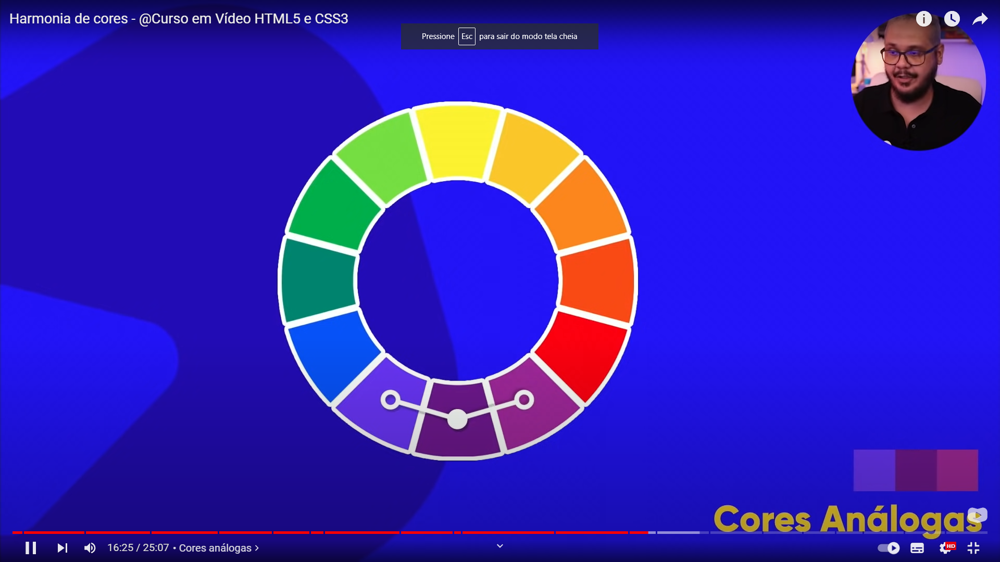
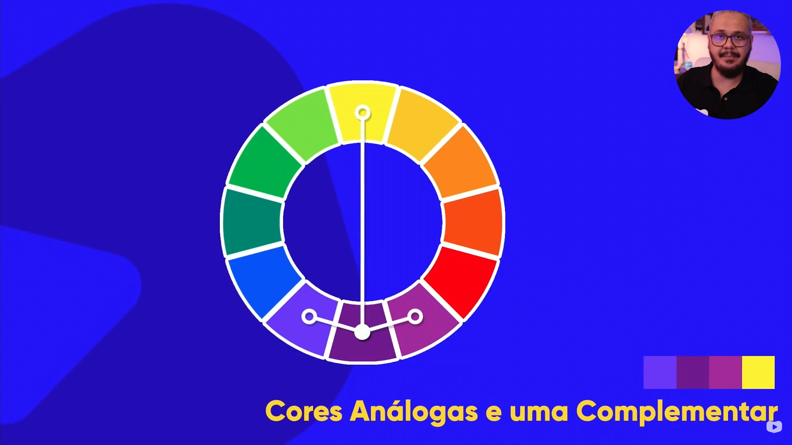
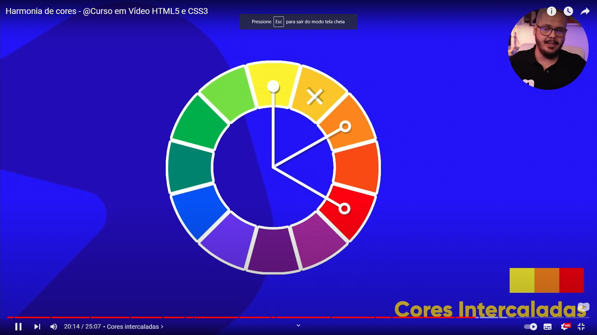
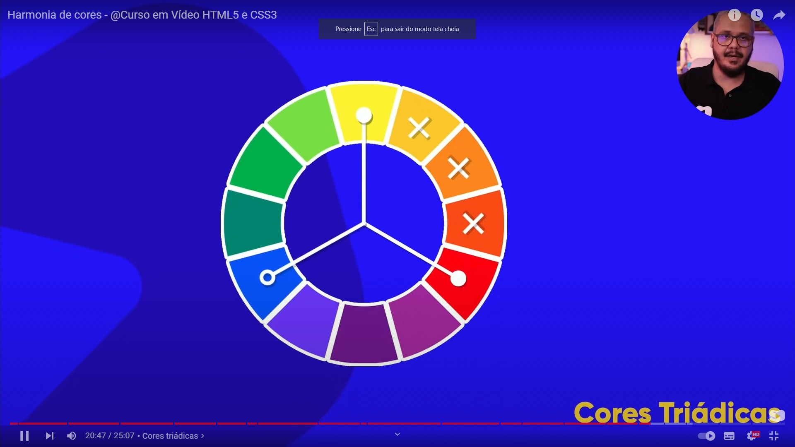
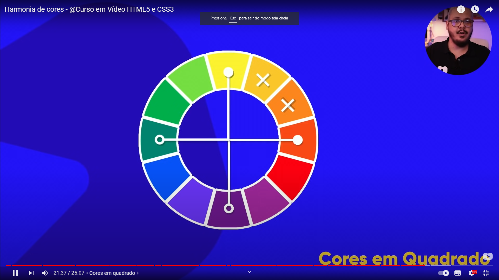
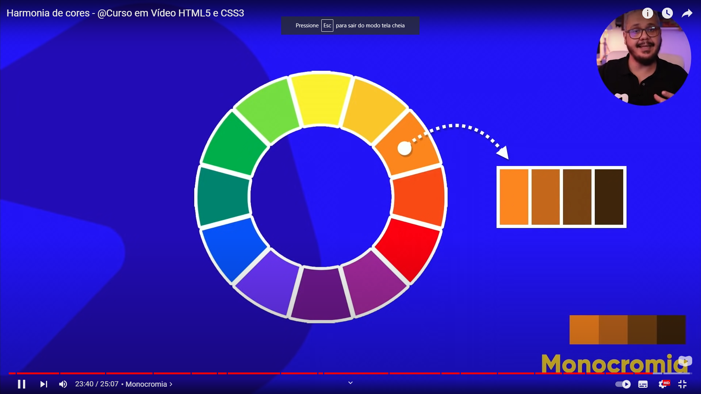

Acha a cor, depois localiza a cor complementar. Acha a outra cor e também a cor complementar.

Forma correta com classificação, escreve primeiro a cor primária e depois a próxima cor. EX: Amarelo-esverdeado. Azul-esverdeado.
Ele tem 12 cores principais, isso para harmonizar as cores.
Recomendado 4 cores.
Se houver cores na logo, verificar a cor primária e utilizá-la com referência.
São cores que tem mais contrastes entre si...
Ex: Se quiser usar um fundo de uma cor, basta traçar uma reta pra saber a cor complementar, ideal para aquele fundo.
São cores que não tem contrastes tão grande entre elas, mas são perceptíveis. Basta pegar as três cores vizinhas.
Uma demonstração das cores complementares e análogas juntas.
Criam um degradê de 3 cores, mas não criam contraste. Análoga e complementar criam um contraste muito forte.
Pega duas cores vizinhas, pula uma cor e pega a terceira cor.
Isso serve para ambos os lados.
Pega uma cor, pula uma cor e escolhe outra cor, depois pula novamente e pega outra cor, no caso de intercaladas. Normalmente não se usa.
Pula sempre 3 cores, depois pula mais 3 cores. Forma um triângulo equilátero.
Pula de duas em duas.
Acha a cor, depois localiza a cor complementar. Acha a outra cor e também a cor complementar.
Ex, pega uma cor e modifica duas características: Saturação e o brilho. Ex HSL na CSS; Cria o efeito degradê.
